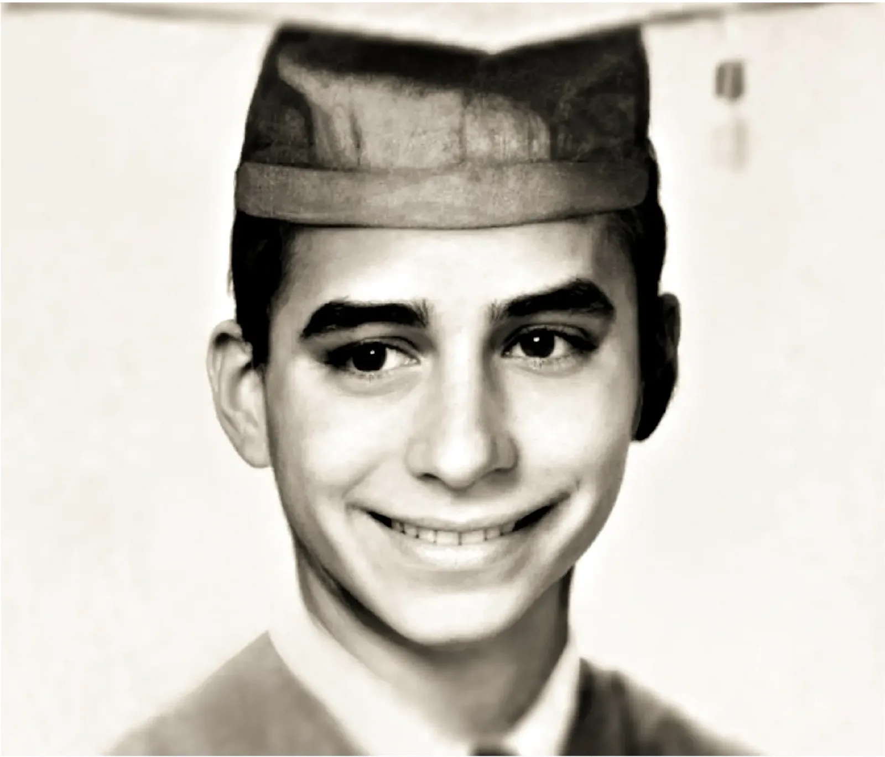
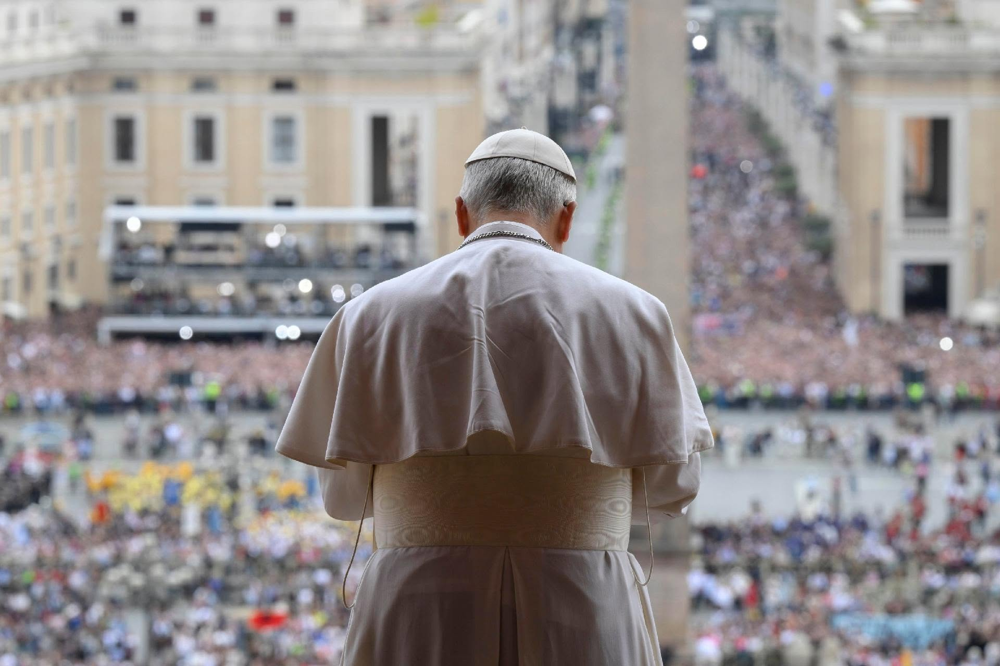
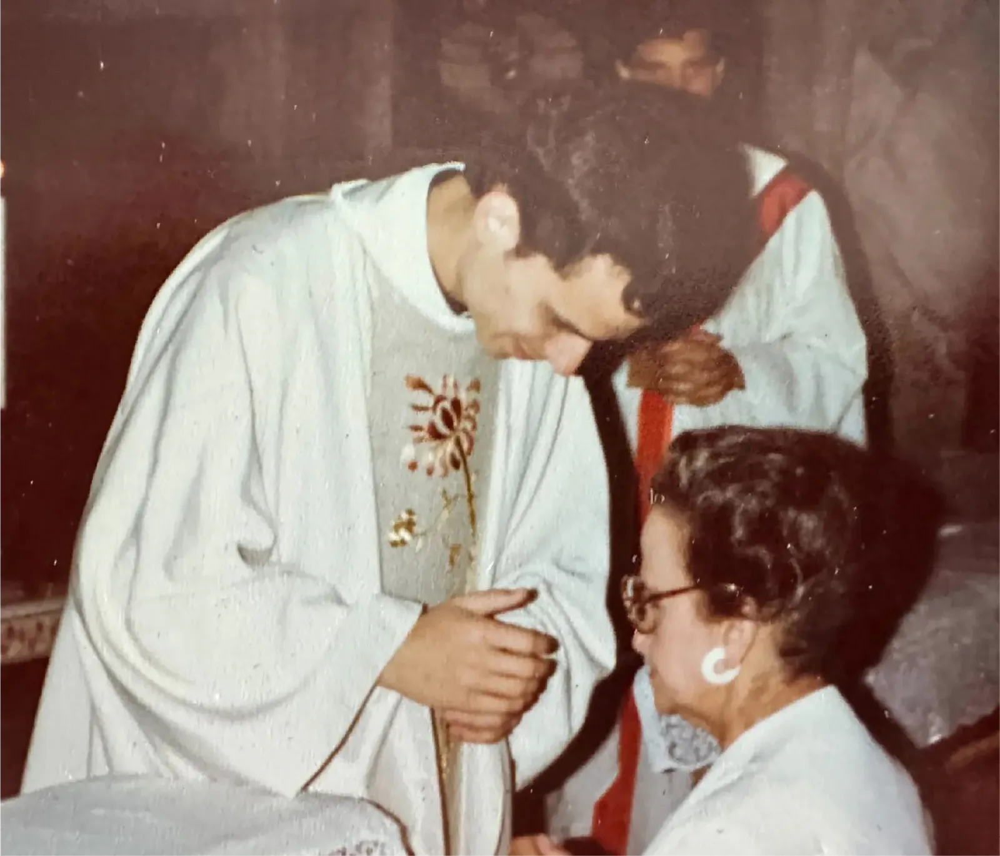

Robert Francis Prevost nació en Chicago, Estados Unidos, en 1955. Allí transcurrieron sus primeros años, antes de iniciar el camino religioso que lo llevaría décadas después al pontificado.


EL TRIBUNO · COBERTURA ESPECIAL
Los mensajes del Papa, la agenda de su visita y las historias de fe que conectan a Salta con el país.
Seguí la coberturaLeón XIV ya llegó a la Argentina
LA COBERTURA, AL INSTANTE
Las últimas cinco publicaciones de El Tribuno, ordenadas por fecha y hora.
Cargando las últimas publicaciones…
EL RECORRIDO · 8 AL 11 DE NOVIEMBRE
Los 22 actos del programa, organizados por ciudad. Seleccioná una ciudad para desplegar su agenda. Volvé a tocarla para cerrarla.
Aeroparque Jorge Newbery
Plaza San Martín
Casa Rosada
Casa Rosada
Palacio Libertad, Centro Cultural Domingo Faustino Sarmiento
Pequeño Cottolengo Don Orione, Claypole
Monumento de los Españoles
Ver mapaInscripción recomendada · Inscripción abierta
Inscripción e información del evento ↗Universidad Católica Argentina
Palacio San Martín
Catedral Metropolitana de la Santísima Trinidad
Arzobispado de Buenos Aires
Aeroparque Jorge Newbery
Monumento de los Españoles
Ver mapaRequiere inscripción · Inscripción abierta
Inscripción e información del evento ↗Aeropuerto Internacional Ministro Pistarini, Ezeiza
Aeropuerto Internacional Ministro Pistarini, Ezeiza
Aeropuerto de Córdoba
Predio de FAdeA (Fábrica Argentina de Aviones)
Ver mapaInscripción recomendada · Inscripción abierta
Inscripción e información del evento ↗Catedral Nuestra Señora de la Asunción
Ver mapaRequiere inscripción
Inscripción e información del evento ↗Plaza de la Basílica de Nuestra Señora de Luján
Ver mapaInscripción recomendada · Inscripción abierta
Inscripción e información del evento ↗Horarios de Argentina (UTC−3). Agenda suministrada para la cobertura; puede estar sujeta a modificaciones. Los enlaces de inscripción solo aparecen en los actos que los tienen disponibles.
NUESTRA MIRADA · SALTA Y EL PAPA
El Señor y la Virgen del Milagro, las historias de los fieles y el recuerdo de la visita de Juan Pablo II a Salta. Una cobertura con identidad propia.
Explorá las historias de Salta ↗
EL PONTÍFICE
“In Illo uno unum. En el único Cristo somos uno”.
Robert Francis Prevost, hoy papa León XIV, nació en Chicago, se formó como agustino, misionó en Perú, fue obispo, cardenal y el 8 de mayo de 2025 fue elegido Obispo de Roma.
En 2004 visitó la Prelatura de Cafayate y recorrió parte de Salta, Tucumán y Catamarca. Ese vínculo con el norte argentino es una de las claves de esta cobertura especial de El Tribuno.
HITOS
Hacé clic en cada año para desplegar la etapa correspondiente. Al abrir un hito, los demás se contraen automáticamente.
Robert Francis Prevost nació en Chicago, Estados Unidos, en 1955. Allí transcurrieron sus primeros años, antes de iniciar el camino religioso que lo llevaría décadas después al pontificado.

Se consagró como religioso agustino en la Provincia del Midwest, en Chicago. Su pertenencia a la Orden de San Agustín marcaría profundamente su identidad espiritual y pastoral.
Fue ordenado sacerdote en Roma, tras completar su formación en el Colegio Internacional Santa Mónica. Más tarde profundizó sus estudios de Derecho Canónico en la Universidad Angelicum.

Fue enviado a la misión agustiniana de Chulucanas, Piura, en Perú. En 1988 se radicó en Trujillo. Esa experiencia misionera en América Latina moldeó buena parte de su mirada pastoral.
Entre 1999 y 2001 fue Prior de la Provincia del Midwest. Su liderazgo dentro de la Orden de San Agustín comenzaba a proyectarse a escala internacional.
En el Capítulo General celebrado en Roma fue elegido Prior General de la Orden de San Agustín. Reelegido en 2007, permaneció en el cargo hasta 2013 y visitó más de 40 países con presencia agustiniana.
Durante una visita más extensa a la Argentina estuvo presente en el Congreso Internacional de San Agustín, concelebró una misa con monseñor Jorge Mario Bergoglio en la Iglesia de San Agustín y visitó la Prelatura de Cafayate.
Ese recorrido incluyó parte de Salta, Tucumán y Catamarca. Es uno de los hitos más relevantes para esta cobertura de El Tribuno, porque muestra el vínculo previo de León XIV con el norte argentino.
Concluida su etapa como Prior General, regresó a su provincia agustina. Ese año también volvió a la Argentina para asistir a la ordenación episcopal de monseñor Alberto Bochatey.
Fue ordenado obispo en diciembre de 2014. Al año siguiente, el papa Francisco lo nombró obispo de Chiclayo, en Perú, donde también adquirió la ciudadanía peruana.
Regresó a Roma para asumir como Prefecto del Dicasterio para los Obispos y Presidente de la Pontificia Comisión para América Latina. El 30 de septiembre de 2023 fue nombrado cardenal por el papa Francisco.
El 8 de mayo de 2025 fue elegido Obispo de Roma y Papa de toda la Iglesia. Al salir al balcón saludó al mundo con un llamado a la paz y recordó su identidad agustiniana con la frase: “Con ustedes soy cristiano y para ustedes obispo”.
Su perfil pastoral destaca por la cercanía, la escucha, el diálogo y una atención especial hacia las personas más necesitadas y heridas por la vida.
HISTORIA DE LOS VIAJES PAPALES
Compará los viajes por pontífice y descubrí qué países visitaron. Pasá el mouse o tocá cada dato para ver el desglose.
Fuentes de trabajo: infografía de EFE y detalle histórico suministrado para este especial. Una gira puede incluir varios países, por eso las visitas a destinos no deben sumarse como si fueran giras independientes. Datos previos a la visita prevista de León XIV en noviembre de 2026; pendientes de verificación editorial.
TODAS LAS NOVEDADES
Todas las noticias de El Tribuno sobre la visita del papa León XIV a la Argentina, en un solo lugar.